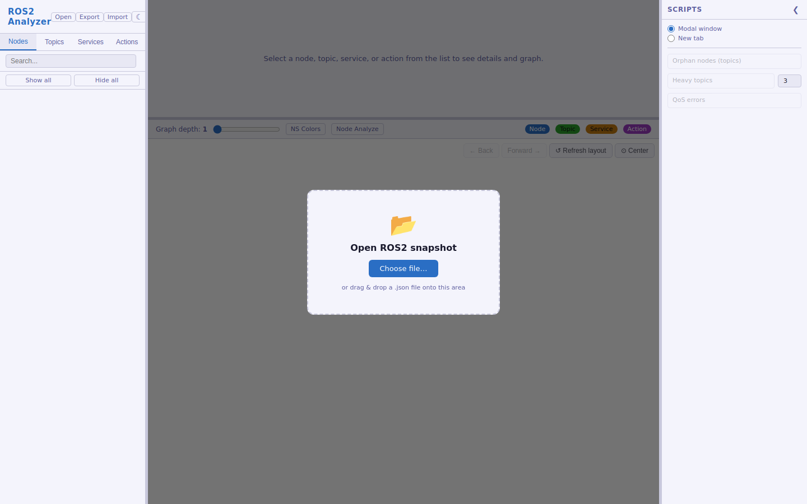
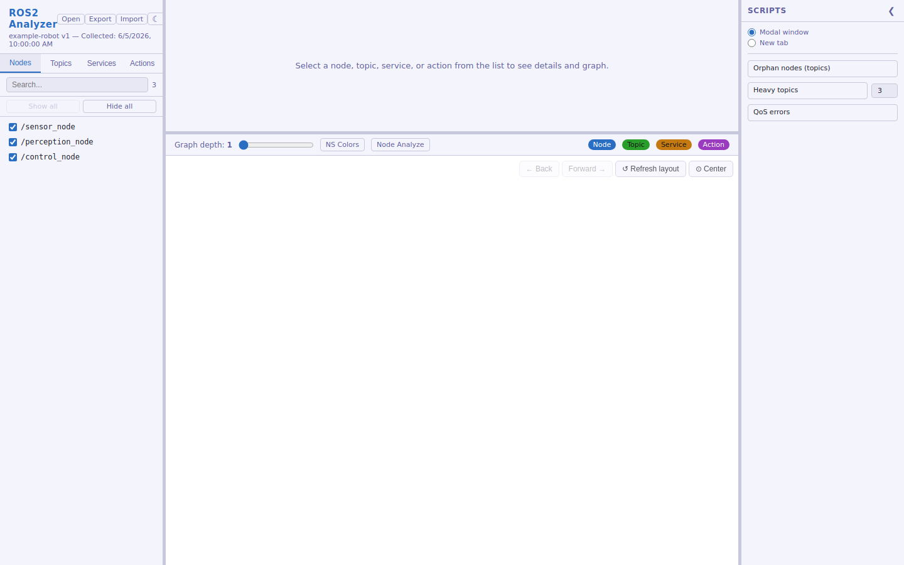
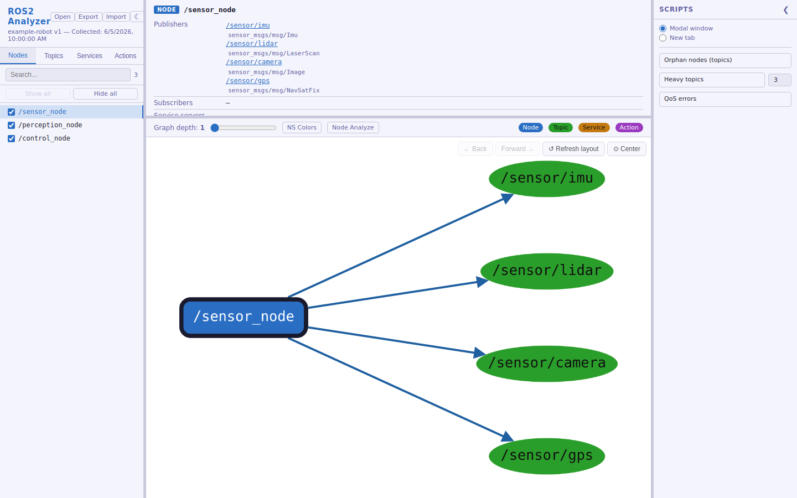
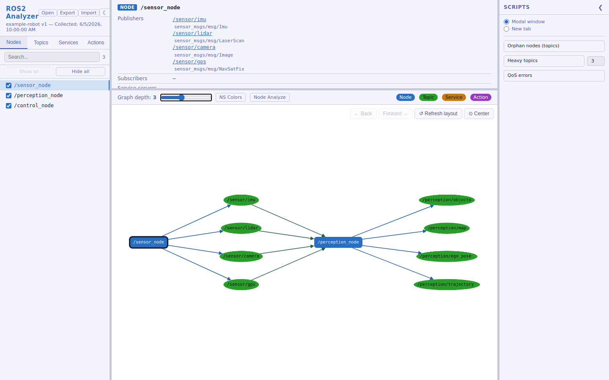
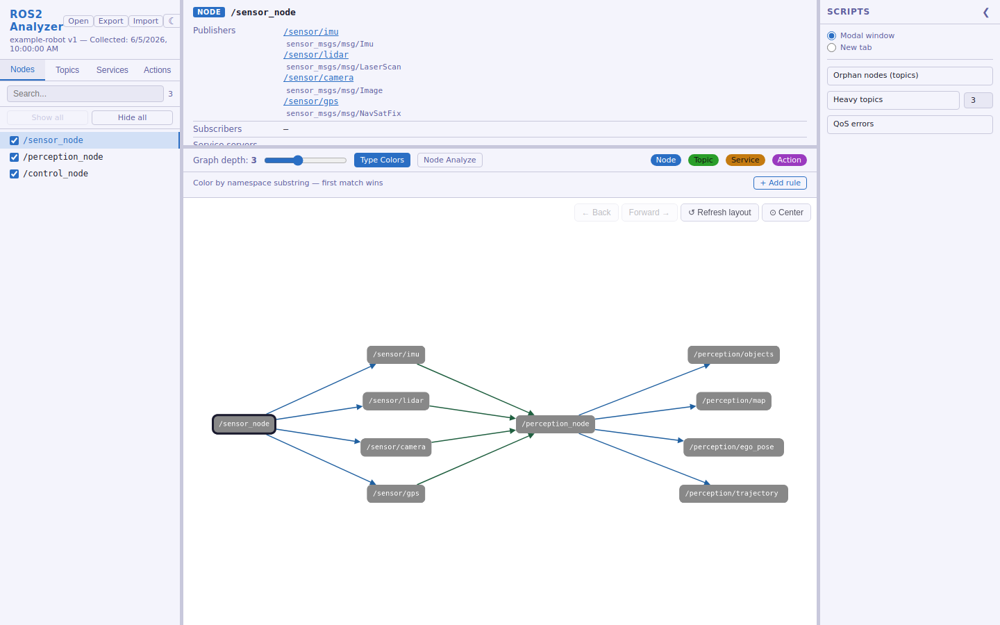
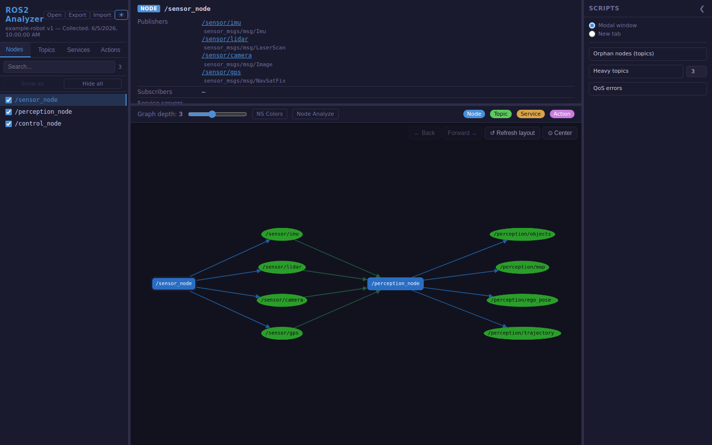

Пошаговое руководство по сбору данных о ROS2-окружении и работе с веб-интерфейсом.
Все скриншоты сделаны на примере файла ros2_env_example.json из корня репозитория.
Откройте src/index.html в браузере. Пока данные не загружены, на экране —
диалог выбора файла: нажмите Choose file… или перетащите .json-снапшот
прямо на страницу.

После загрузки в левой панели появляется список нод — вкладками переключаетесь между Nodes / Topics / Services / Actions, сверху есть поиск по имени.

Клик по любой сущности в списке открывает панель деталей (тип, QoS, связи) и строит граф связей на основе BFS-обхода от выбранной сущности.

Слайдер Graph depth (1–6) управляет тем, сколько «хопов» связей показывать: depth=1 — только прямые связи, depth=2 и больше — связи связей.

Кнопка NS Colors переключает раскраску узлов графа: по типу сущности или по настраиваемым правилам — подстрокам namespace (правила добавляются в панели, которая появляется под графом).

Кнопка ☾/☀ в шапке сайдбара переключает светлую/тёмную тему интерфейса.
